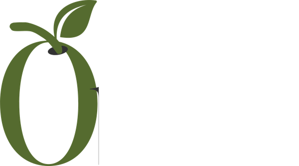

Something green is coming.
One grove. One harvest. Pressed within hours of picking, never blended, never rushed. We make less so that every drop means more.
We work with two groves along Turkey's Aegean coast: prized Ayvalık trees near the northern gulf, and a native heirloom variety from the hillsides near Milas in the south. Different soil, different character, pressed with the same care.
Hand-picked at first light, in the narrow window when the fruit turns.
Pressed below 27°C within four hours. Nothing added, nothing lost.
Dark glass, numbered by hand, sealed the same week it was pressed.
From our press to your door. It never sits in a warehouse.
Updated as the first batch moves from press to bottle. No set launch date — we ship when it's ready.
First light harvest begins on the Ayvalık trees. Fruit sampled at 32% oil content, still turning from green to violet — a week earlier than last year.
Cold press within three hours of picking, kept under 27°C the whole way through. Cloudy green-gold, sharp on the finish — exactly what we pressed for.
Second grove, the Aegean Heirloom trees near Milas, comes in lower-yield but higher-polyphenol. Blended in small ratio to round out the pepper.
Bottling begins. Dark glass, hand-numbered. First case sealed as Lot No. 001.
Dark glass to protect what light would ruin. A label that says only what matters. The rest is in the bottle.